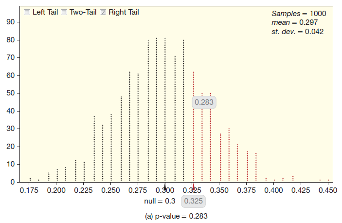
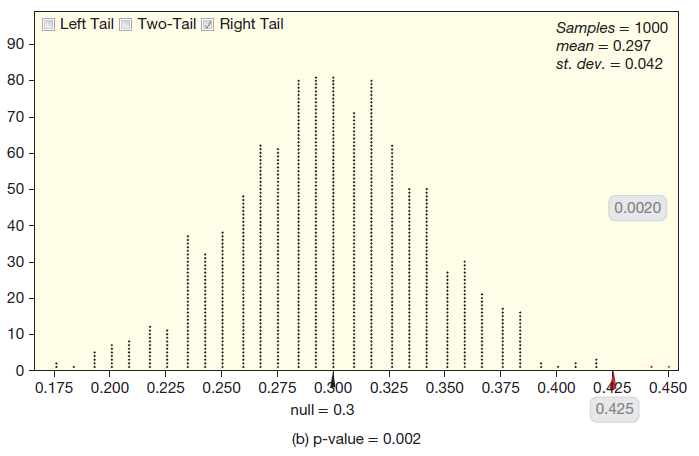
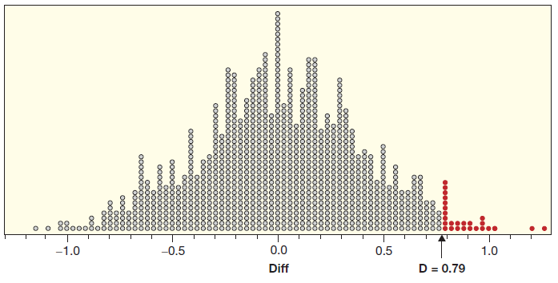
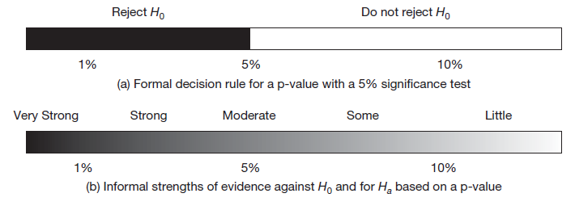
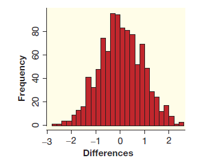

4.3 통계적 유의성 판단
4.1절에서 가설검증은 표본이 영가설을 반박하고 대안가설을 지지하는 증거가 얼마나 강한지 결정하는 것이라고 하였다. 4.2절에서 영가설이 사실일 때 표본 통계량이 얼마나 발생하기 어려운 값인지를 측정한 것이 p-값임을 배웠다. 이 절에서 두 가지 아이디어를 결합할 것이다.
예제 4.15. 예제 4.2에서 먹고 남은 음식의 포장을 부탁한 후 잊고 가는 손님의 비율이 약 \(30\%\)라는 주장을 다루었다. 모비율이 \(30\%\)보다 큰가에 관심이 있을 때 가설은 다음과 같다.
- \(H_0: p = 0.30\)
- \(H_a: p > 0.30\)
여기서 \(p\)는 레스토랑에서 남은 음식의 포장을 부탁하고 떠날 때 잊고 간 모든 손님의 비율이다. 다음 각 표본 비율에 대한 p-값을 구하고 대안가설을 지지하는 증거가 어느 정도인지 설명하라. 대안가설을 가장 강하게 지지하는 p-값은 어느 것인가?
- (1) \(\hat{p} = 39/120 = 0.325\) (2) \(\hat{p} = 51/120 = 0.425\)
풀이 (클릭하면 풀이가 보입니다)
표본 비율 두 개 모두 \(0.3\)보다 크다. 무작위 변동으로 인해 크게 나왔을까? 아니면 모수가 실제로 \(0.3\)보다 커서 크게 나온 것일까?
(1) 아래 그림 (1)의 임의화 분포를 보면 표본 비율 \(\hat{p} = 0.325\)는 발생할 가능성이 비교적 높은 지역에 있다. p-값은 \(0.283\)이다. 모의 표본 중에 많은 것이 표본 비율 \(0.325\)보다 더 극단적이다. 실제 모비율이 \(0.3\)일 때 이 표본은 발생하기 어려운 값이 결코 아니다. 이 표본은 영가설을 반박하는 증거가 강하지 않다.
(2) 아래 그림 (2)의 임의화 분포를 보면 표본 비율 \(\hat{p} = 0.425\)는 중심에서 거리가 먼 꼬리에 있다. p-값은 \(0.002\)이다. 실제 모비율이 \(0.3\)일 때 이 표본은 발생하기 매우 어려운 값이다. 이 표본은 영가설을 반박하고 모비율이 \(0.3\)보다 크다는 대안가설에 강한 증거를 제공한다.
p-값 \(0.002\)가 \(0.283\)보다 대안가설을 더 강하게 지지하는 증거를 제공한다.


확인문제 1. 다음 중 p-값에 대한 설명으로 올바른 것은 무엇인가?
1 p-값은 영가설이 참일 때, 표본 통계량보다 더 극단적인 통계량이 발생할 확률이다.
2 p-값은 영가설이 거짓일 때, 표본 통계량보다 더 극단적인 통계량이 발생할 확률이다.
3 p-값은 표본 통계량의 중앙값과 그 범위 내의 확률 분포를 나타낸다.
4 p-값은 임의화 분포에서 관측된 통계량이 나올 가능성의 비율을 나타낸다.
확인문제 2. 예제 4.15 에서, p-값이 \(0.283\)인 표본 비율 \(\hat{p} = 0.325\)에 대해, 영가설을 반박하는 증거는 얼마나 강한가?
1 매우 강한 증거
2 강한 증거
3 약한 증거
4 증거가 없다
확인문제 3. 예제 4.15 에서, p-값이 \(0.002\)인 표본 비율 \(\hat{p} = 0.425\)에 대해, 대안가설을 지지하는 증거는 무엇인가?
1 영가설을 반박하는 강한 증거
2 대안가설을 지지하는 매우 강한 증거
3 증거가 약하다
4 대안가설을 지지하는 증거가 없다
확인문제 4. 예제 4.15 에서, \(\hat{p} = 0.325\)의 표본 비율에 대해, p-값을 계산한 결과 \(0.283\)이 나왔다면, 어떤 결론을 내릴 수 있는가?
1 영가설을 기각할 충분한 증거가 있다.
2 대안가설을 기각할 충분한 증거가 있다.
3 영가설을 기각할 증거가 부족하다.
4 대안가설을 기각할 증거가 부족하다.
통계적 유의성
p-값이 충분히 작은 표본은 영가설이 참일 때 기대했던 것보다 극단적인 표본을 얻었다는 의미이다. 이럴 때 데이터는 통계적 유의성(statistical significance)이 있다고 말한다. 통계적으로 유의한 데이터는 영가설을 반박하고 대안가설을 지지하는 확실한 증거를 제공한다. 모집단에 관한 주장을 뒷받침하기 위해 표본을 활용할 수 있다.
예제 4.16. 예제 4.7에서 회사는 공급받은 닭고기의 비소 농도가 \(80\) ppb보다 높은지 검사한다. 가설은 다음과 같다.
- \(H_0: \mu = 80\)
- \(H_a: \mu > 80\)
여기서 \(\mu\)는 공급받은 모든 닭고기의 평균 비소 농도이다.
(1) 표본이 통계적으로 유의하다면, 회사는 어떤 결론을 내릴까?
(2) 표본이 통계적으로 유의하지 않다면, 회사의 결론은 무엇일까?
풀이 (클릭하면 풀이가 보입니다)
(1) 표본이 통계적으로 유의하다면, 회사는 공급받은 닭고기의 평균 비소 농도가 80보다 높다는 증거를 발견한 것이다. 회사는 이 공급자의 닭고기를 사지 말아야 한다.
(2) 표본이 통계적으로 유의하지 않다면, 회사는 공급받은 닭고기의 평균 비소 농도에 관하여 어떤 결론도 내릴 수 없다. 평균 비소 농도가 80보다 클 수도 있고 아닐 수도 있으므로, 회사는 이 공급자의 닭고기 공급 계약을 취소할 증거는 충분하지 않다.
p-값이 얼마나 작아야 통계적으로 유의하다고 말할 수 있을까? p-값이 \(0.0001\)이면 통계적으로 유의하고, \(0.5\)일 때는 통계적으로 유의하지 않다고 결정하는 데 동의한다고 하자. p-값이 \(0.0001\)과 \(0.5\) 사이에 있을 때는 어떻게 할 것인가? 사람마다 기준이 달라 같은 p-값에 대하여 유의성 판단이 다를 것이다. 따라서 사전에 합리적인 커트라인을 제시해야 한다. 통계학자는 커트라인을 검증의 유의수준이라고 부르며 그리스 문자 \(\alpha\)(alpha)로 표기한다. \(\alpha = 0.05\)라면, 우리는 표본의 p-값이 \(0.05\)보다 작을 때 통계적으로 유의하다고 판단하는 \(5\%\) 검증을 한다고 말한다.
간단히 \(P < 0.05\)로 표기하면 p-값이 \(0.05\)보다 작아 결과는 \(5\%\) 유의수준에서 통계적으로 유의하다는 뜻이다.
확인문제 1. 다음 중 p-값에 대한 설명으로 올바른 것은 무엇인가?
1 p-값은 영가설이 참일 때, 표본 통계량보다 더 극단적인 통계량이 발생할 확률이다.
2 p-값은 영가설이 거짓일 때, 표본 통계량보다 더 극단적인 통계량이 발생할 확률이다.
3 p-값은 표본 통계량의 중앙값과 그 범위 내의 확률 분포를 나타낸다.
4 p-값은 임의화 분포에서 관측된 통계량이 나올 가능성의 비율을 나타낸다.
확인문제 2. 예제 4.16 에서, 표본이 통계적으로 유의하다면 회사는 어떤 결론을 내리게 되는가?
1 평균 비소 농도가 80보다 크지 않다고 결론 내린다.
2 공급받은 닭고기의 평균 비소 농도가 80보다 높다는 증거를 발견한 것이다.
3 평균 비소 농도가 80보다 작다고 결론 내린다.
4 공급받은 닭고기에서 비소 농도가 80보다 낮다고 결론 내린다.
확인문제 3. 예제 4.16 에서, p-값이 \(0.5\)일 때 회사는 어떤 결론을 내리게 되는가?
1 평균 비소 농도가 80보다 클 수도 있고 작을 수도 있다는 결론을 내린다.
2 공급받은 닭고기의 평균 비소 농도가 80보다 크다고 결론 내린다.
3 평균 비소 농도가 80보다 크지 않다고 결론 내린다.
4 평균 비소 농도가 80보다 크다고 확신할 수 있다.
확인문제 4. 통계적 유의성을 판단할 때 p-값이 \(0.05\)보다 작다면 어떻게 해석하는가?
1 결과는 통계적으로 유의하지 않다고 판단한다.
2 결과는 통계적으로 유의하다고 판단한다.
3 결과가 우연히 발생했을 확률이 \(5\%\) 이하라는 의미이다.
4 p-값이 커질수록 결과는 더욱 유의미하다고 판단한다.
확인문제 5. 예제 4.16 에서, 유의수준 \(\alpha\)가 \(0.05\)일 때, p-값이 \(0.04\)라면 회사는 어떤 결정을 내릴 수 있는가?
1 평균 비소 농도가 80보다 작다고 결론 내린다.
2 영가설을 기각하고 대안가설을 지지한다.
3 평균 비소 농도가 80보다 크지 않다고 결론 내린다.
4 평균 비소 농도가 80보다 작을 수도 있다고 결론 내린다.
통계적 결정
p-값이 작다는 것은 표본 결과가 그저 우연히 발생한 것이 아니며, 영가설을 반박하고 대안가설을 지지하는 증거가 충분하다는 뜻이다. 영가설을 반박하는 증거가 충분할 때, 대안가설을 선호하고 영가설을 기각한다(reject \(H_0\))고 말한다. 데이터가 영가설 하에서 충분히 발생할 수 있을 때는 영가설을 기각하지 못한다(do not reject \(H_0\))고 표현한다. 유의수준 \(\alpha\)가 주어지면 표본 통계량에서 얻은 p-값과 \(\alpha\)를 비교하여 통계적 검증에 대한 결론을 내리는 것은 간단하다.
- p-값 < \(\alpha\): \(H_0\)를 기각한다. 결과는 통계적으로 유의하고 대안가설이 참이라는 확실한 증거가 있다.
- p-값 ≥ \(\alpha\): \(H_0\)를 기각하지 못한다. 결과는 통계적으로 유의하지 않고 대안가설이 참이라는 확실한 증거는 없다.
예제 4.17. 예제 4.12에서 학생이 4자리 숫자를 무작위로 만들 때 마지막 자리의 숫자가 0인 비율이 \(10\%\)보다 작은지 검증하는 문제의 가설은 \(H_0: p = 0.1\) vs \(H_a: p < 0.1\) 이고 p-값은 \(0.001\)이었다. \(0.05\) 유의수준에서 어떤 결정을 내려야 할까? \(\alpha = 0.10\) 또는 \(\alpha = 0.01\)이면 결정이 달라지는가?
풀이 (클릭하면 풀이가 보입니다)
p-값 \(0.001\)은 유의수준 \(0.05\)보다 작으므로 \(H_0\)를 기각한다. 학생이 4자리 무작위 숫자를 만들 때, 마지막 자리의 숫자가 0인 비율은 실제로 무작위일 때 기대되는 \(10\%\)의 비율보다 작다는 증거를 얻었다. p-값은 \(0.10\)과 \(0.01\)보다 작으므로 결론과 해석은 변하지 않는다. 학생들은 도구에 의지하지 않고 무작위 수를 만드는 것에 능하지 않다!
공식적으로 가설검증을 할 때는, 영가설의 기각여부를 결정한 후에 반드시 대안가설과 문제의 맥락에 따른 결론을 기술해야 한다.
예제 4.18. 예제 4.10에서 밤에 전깃불을 켜놓으면 어두울 때보다 쥐의 평균 몸무게가 더 증가하는지 검증하는 문제의 가설은 \(H_0: \mu_L = \mu_D\) vs \(H_a: \mu_L > \mu_D\)이고 p-값은 \(0.018\)이었다. \(5\%\) 유의수준을 사용하여 다음 물음에 답하라.
(1) 결과는 통계적으로 유의한가?
(2) 검증의 공식적인 결론은 무엇인가?
(3) 문맥에 알맞게 결론을 기술하라.
(4) 밤에 전깃불을 켜놓으면 쥐의 평균 몸무게를 증가시킨다고 결론 내릴 수 있는가?
풀이 (클릭하면 풀이가 보입니다)
(1) 통계적으로 유의하다. p-값 \(0.018\)은 유의수준 \(0.05\)보다 작기 때문이다.
(2) p-값 \(0.018\)은 유의수준 \(0.05\)보다 작으므로 공식적인 결론은 “\(H_0\)를 기각한다”이다.
(3) \(H_0\)를 기각하므로 대안가설 \(\mu_L > \mu_D\)을 지지하는 증거를 얻었다. 밤에 전깃불을 켜놓았을 때 쥐의 평균 몸무게가 어두웠을 때보다 더 많이 증가한다는 확실한 증거를 얻었다.
(4) 있다. 결과는 통계적으로 유의하고 데이터는 실험에서 얻어졌으므로 인과성이 존재한다고 결론 내릴 수 있다.
확인문제 1. 다음 중 p-값에 대한 설명으로 올바른 것은 무엇인가?
1 p-값이 작을수록 영가설을 기각할 확률이 낮다.
2 p-값은 표본 통계량이 영가설이 참일 때 얼마나 극단적일지를 나타낸다.
3 p-값은 영가설을 기각하는 기준이 된다.
4 p-값이 클수록 대안가설을 지지하는 증거가 강하다.
확인문제 2. 예제 4.17 에서 p-값이 \(0.001\)일 때, 유의수준 \(\alpha\)가 \(0.05\)일 경우 어떤 결정을 내려야 하는가?
1 영가설을 기각하지 못한다.
2 영가설을 기각한다.
3 p-값이 너무 커서 결론을 내릴 수 없다.
4 대안가설을 기각한다.
확인문제 3. 예제 4.18 에서, p-값이 \(0.018\)일 때 유의수준 \(5\%\)에서 결과는 통계적으로 어떤지 판단하라.
1 결과는 통계적으로 유의하지 않다.
2 결과는 통계적으로 유의하다.
3 p-값이 \(0.018\)이라면 결과가 무의미하다.
4 p-값이 \(0.05\)보다 크면 통계적으로 유의하지 않다.
확인문제 5. 예제 4.18 에서, 밤에 전깃불을 켜놓으면 쥐의 몸무게가 증가한다고 결론 내릴 수 있는가?
1 결론을 내릴 수 없다.
2 결과는 통계적으로 유의하지만, 인과성을 결론 내릴 수 없다.
3 통계적으로 유의하고 실험에서 얻은 데이터로 인과성을 결론 내릴 수 있다.
4 결과가 유의하지 않으므로 결론을 내릴 수 없다.
예제 4.19. 4.2절의 예제 4.14는 남녀 사이에 게임을 즐기는 비율이 다른지에 관한 가설 \(H_0: p_M = p_F\) vs \(H_a: p_M \neq p_F\)를 다룬다. 이 검증의 p-값은 \(0.282\)이다. 유의수준 \(5\%\)에서 공식적인 결정은 무엇인가? 문맥에 맞는 결론을 기술하라.
풀이 (클릭하면 풀이가 보입니다)
p-값 \(0.282\)는 유의수준 \(0.05\)보다 작지 않다. \(H_0\)를 기각할 충분한 증거가 없다. 남녀 사이에 게임을 즐기는 비율이 다르다는 확실한 증거를 얻지 못했다.
공식적인 결정은 “영가설을 기각한다” 또는 “영가설을 기각하지 못한다”의 둘 중에 하나이다. 데이터가 유의하면 \(H_0\)를 기각하고, 유의하지 못하면 \(H_0\)를 기각하지 못한다.
위 예제처럼 표본이 유의하지 않을 때\(H_0\)를 채택한다고 말하면 안된다. 영가설을 반박하는 증거가 부족하다는 것이 영가설을 지지하는 증거는 아니기 때문이다. 사실상 가설검증은 대안가설을 지지하는 증거만 찾는 것이지, 영가설을 지지하는 증거를 찾는 것은 아니다. 다음 예제가 이런 점을 분명히 한다.
예제 4.20. X라고 불리는 신비한 동물이 있다. 다음 가설을 생각하자.
\(H_0\): X는 코끼리이다.
\(H_a\): X는 코끼리가 아니다.
다음 각각의 증거가 있다면 어떤 결론을 내리겠는가?
(1) X는 \(4\)개의 다리가 있다.
(2) X는 두 다리로 걷는다.
풀이 (클릭하면 풀이가 보입니다)
(1) 코끼리는 다리가 \(4\)개이므로 영가설을 기각하지 못한다. 그렇다고 영가설을 받아들여 X는 코끼리라고 결론 내릴 수도 없다. 영가설을 반박하는 충분한 증거를 데이터에서 얻지 못했다. 따라서 우리는 X가 코끼리인지 아닌지는 결정할 수 없다.
(2) 코끼리가 두 다리로 걷는 것이 불가능하지는 않지만(서커스에서 훈련받은 코끼리는 두 다리로 걷는다) 매우 드문 일인 것만은 확실하다. 따라서 두 다리로 걷는다는 것은 영가설을 기각하는 충분한 증거가 된다. X는 아마도 코끼리는 아닐 것이라고 결론 내린다.
이 예제는 4.1절에서 기술한 영가설과 대안가설의 차이를 강조한다. 가설검증은 대안가설을 지지하고 영가설을 반박하는 증거를 찾기 위하여 설계된 것이다.
확인문제 1. 다음 중 Example \(4.19\)에서 p-값 \(0.282\)에 대한 결론으로 올바른 것은 무엇인가?
1 p-값이 \(0.282\)로 유의수준 \(5\%\)보다 작기 때문에 \(H_0\)를 기각한다.
2 p-값이 \(0.282\)로 유의수준 \(5\%\)보다 크므로 \(H_0\)를 기각하지 않는다.
3 p-값이 \(0.282\)로 유의수준 \(5\%\)보다 크면 대안가설을 지지하는 증거가 있다.
4 p-값이 \(0.282\)로 유의수준 \(5\%\)보다 작으면 남녀 사이에 게임을 즐기는 비율이 다르다는 확실한 증거가 있다.
확인문제 2. 예제 4.20 에서, X가 \(4\)개의 다리를 가지고 있을 때 결론은 무엇인가?
1 영가설을 기각하고 X는 코끼리라고 결론 내린다.
2 영가설을 기각하지 못하고 X가 코끼리일 가능성이 높다고 결론 내린다.
3 영가설을 기각하지 못하고 X가 코끼리일 수 있다고 결론 내린다.
4 영가설을 기각하지 못하고 X가 코끼리라고 결론 내린다.
확인문제 3. 예제 4.20 에서, X가 두 다리로 걷는다면, 결론은 무엇인가?
1 영가설을 기각하고 X는 코끼리가 아니라 결론 내린다.
2 영가설을 기각하지 못하고 X는 코끼리일 가능성이 있다.
3 영가설을 기각하고 X가 코끼리일 확률이 높다고 결론 내린다.
4 영가설을 기각하지 못하고 X가 코끼리일 수 있다고 결론 내린다.
확인문제 4. 예제 4.19 에서 영가설이 기각되지 않았을 때 어떤 결론을 내리는 것이 올바른가?
1 영가설을 받아들여 X가 코끼리라고 결론 내린다.
2 영가설을 기각하고 대안가설을 지지한다.
3 영가설을 기각하지 못하고 X가 코끼리일 가능성은 없다고 결론 내린다.
4 영가설을 기각하지 못하고 X가 코끼리일 가능성은 있다.
확인문제 5. 예제 4.19 에서 영가설을 기각하지 못한 경우, 어떤 결론을 내려야 하는가?
1 데이터가 영가설을 지지한다고 결론을 내린다.
2 영가설을 기각할 증거가 충분하지 않다고 결론 내린다.
3 대안가설이 참이라는 증거를 찾을 수 없다.
4 대안가설을 지지한다고 결론 내린다.
데이터 4.3. 미소와 관용
단순한 미소가 규율 위반에 대한 처벌에 영향을 줄 수 있을까? 한 연구팀이 미소가 범법자의 징계에 영향을 끼치는지 연구하였다. 실험 참가자는 부정행위로 고발된 학생의 징계 수위를 판단하는 대학 징계위원회 구성원의 역할을 맡았다.
각 용의자의 범행에 대한 설명과 미소를 띠거나 중립적인 표정의 사진 한 장이 제공되었다. 참가자가 결정한 징계 수준에 따라 관용 점수를 산출했다. 전체 자료는 교재 웹사이트 Smiles에서 찾을 수 있다. 연구자는 미소를 띤 용의자의 평균 관용 점수가 중립적인 표정을 가진 용의자의 평균 점수와 다른지 검증한다.
예제 4.21. 위 실험에서 각 그룹에 참가한 학생 수는 \(34\)명이다. \(10\)점 만점의 관용 점수에서 미소 그룹의 평균 점수는 \(4.91\), 중립 그룹의 평균 점수는 \(4.12\)이다. 미소가 관용에 영향을 끼치는지 유의수준 \(5\%\)에서 검증하라.
풀이 (클릭하면 풀이가 보입니다)
이 검증은 두 개의 평균을 비교한다. 미소를 짓는 그룹의 평균 관용 점수를 \(\mu_s\), 중립적인 표정을 짓는 그룹의 평균 점수는 \(\mu_n\)으로 표기하자. 두 그룹 간의 평균 점수가 다른지 검증하는 것이므로 가설은 다음과 같다.
\(H_0: \mu_s = \mu_n\)
\(H_a: \mu_s \neq \mu_n\)
\(\bar{x}_s = 4.91\), \(\bar{x}_n = 4.12\) 이므로 표본 평균의 차이는 \(\bar{x}_s - \bar{x}_n = 4.91 - 4.12 = 0.79\) 이다. 아래 임의화 분포는 모의실험을 1,000번 하여 만든 것이다. 관측 통계량 \(0.79\)보다 큰 값은 \(23\)개이다. 양쪽 검증이므로 p-값은 (2×23) / 1000 = \(0.046\) 이다. 이 p-값은 유의수준 \(0.05\)보다 작다. 미소를 지으면 관용 점수가 다르다는 증거를 얻었다. 미소를 지으면 평균적으로 더 많은 관용을 기대할 수 있다. 여러분이 혹 징계위원회 앞에 선다면 미소를 지어야 한다!

예제 4.22. 위 데이터에서 미소 그룹 또는 중립 그룹 중에 점수 하나만 조금 달라져도 평균 점수 차이는 \(\bar{x}_s - \bar{x}_n = 0.76\) 이 된다. 임의화 분포에서 평균 차이를 넘는 점은 \(4\)개가 추가된다. p-값을 계산하고 유의수준 \(5\%\)에서 검증하라.
풀이 (클릭하면 풀이가 보입니다)
임의화 분포에서 \(\bar{x}_s - \bar{x}_n = 0.76\)을 초과하는 점은 23 + 4 = \(27\)개이다. p-값은 (2×27) / 1000 = \(0.054\) 이다. p-값은 \(5\%\)보다 작지 않으므로 영가설을 기각할 수 없다. 미소를 지을 때 관용이 달라진다는 충분한 증거는 없다. 징계위원회 앞에서 미소는 효과가 없다!
확인문제 1. 예제 4.21 에서, 미소 그룹과 중립 그룹의 평균 점수 차이가 \(0.79\)일 때, p-값을 계산한 결과 \(0.046\)이 나왔다. 유의수준 \(5\%\)에서 이 결과에 대한 결론은 무엇인가?
1 p-값이 유의수준 \(0.05\)보다 크므로 영가설을 기각할 수 없다.
2 p-값이 유의수준 \(0.05\)보다 작으므로 영가설을 기각하고 대안가설을 지지한다.
3 p-값이 유의수준 \(0.05\)보다 크므로 대안가설을 지지할 수 있다.
4 p-값이 유의수준 \(0.05\)보다 작으므로 대안가설을 지지할 수 없다.
확인문제 2. 예제 4.22 에서, 미소 그룹과 중립 그룹의 평균 점수 차이가 \(0.76\)일 때, p-값은 \(0.054\)이다. 유의수준 \(5\%\)에서 이 결과에 대한 결론은 무엇인가?
1 p-값이 유의수준 \(0.05\)보다 크므로 영가설을 기각할 수 없다.
2 p-값이 유의수준 \(0.05\)보다 작으므로 영가설을 기각하고 대안가설을 지지한다.
3 p-값이 유의수준 \(0.05\)보다 크므로 대안가설을 지지할 수 있다.
4 p-값이 유의수준 \(0.05\)보다 크므로 영가설을 지지할 수 없다.
확인문제 3. 예제 4.21 에서, p-값이 \(0.046\)로 유의수준 \(5\%\)에서 유의미하다고 할 때, 결론은 무엇인가?
1 미소를 지으면 관용 점수가 달라진다는 증거가 충분하다.
2 미소를 지으면 관용 점수가 달라진다는 증거는 부족하다.
3 미소를 지으면 관용 점수가 달라진다는 증거가 없다.
4 미소를 지으면 관용 점수가 달라질 가능성이 없다.
확인문제 4. 예제 4.22 에서, p-값이 \(0.054\)로 유의수준 \(5\%\)에서 유의미하지 않다고 할 때, 결론은 무엇인가?
1 미소를 지을 때 관용이 달라진다는 증거가 충분히 없다.
2 미소를 지을 때 관용이 달라진다는 증거가 충분하다.
3 미소를 지을 때 관용이 달라질 가능성에 대한 확실한 증거가 없다.
4 미소를 지을 때 관용이 달라질 가능성에 대한 확실한 증거가 있다.
비공식적인 통계적 결정

예제 4.22에서 한 사람의 점수 변화가 검증의 결론을 극적으로 바꾸었다. 고전적인 가설검증의 단점 하나는 우리에게 흑백논리를 강제한다는 것이다. p-값이 유의수준보다 작으면 “영가설을 기각하라” 아니면 “영가설을 기각하지 마라”가 공식적인 결정이다. 위 그림 (1)가 \(5\%\) 유의수준에서 공식적인 결정이다.
흑백논리에서 벗어날 때 좀 더 편안할 수 있다. 영가설을 기각하는 증거를 얻었다고 상당히 확신은 하지만 그렇다고 영가설을 반박할 만큼 아주 확실하지 않은 증거일 수도 있다. 이런 이유로 p-값을 흑백논리로 해석하지 않고 영가설을 반박하는 증거의 강도가 어느 정도인지 기술하기도 한다. 앞의 두 예제에서 p-값 \(0.046\)과 \(0.054\)는 미소가 관용을 증가시킨다는 보통의(moderate) 증거를 얻었지만 매우 강한 증거는 아니라고 해석한다.
위 그림 (2)는 영가설을 반박하는 증거의 강도를 다르게 해석한다. 두 가지 방법 중에 어느 것이 옳을까? 둘 다 장점이 있다. 명심해야 할 것은 유의수준이 주어지면 구체적인 결정을 할 수도 있고, p-값을 증거의 강도를 측정하는 것으로 사용할 수도 있다는 것이다.
확인문제 1. 예제 4.22 에서 p-값이 \(0.054\)로 유의수준 \(5\%\)에서 유의미하지 않다고 결론 내렸을 때, 이 결과에 대해 가장 적절한 해석은 무엇인가?
1 p-값이 \(0.05\)보다 작으므로 영가설을 기각할 수 있다.
2 p-값이 \(0.05\)보다 크므로 영가설을 기각할 수 없다.
3 p-값이 \(0.05\)보다 크지만 영가설을 기각해야 한다.
4 p-값이 \(0.05\)보다 작으므로 영가설을 기각하지 않는다.
확인문제 2. 예제 4.22에서 p-값 \(0.046\)과 \(0.054\)는 미소가 관용을 증가시킨다는 보통의 증거로 해석되었다. 이를 기반으로, 두 p-값에 대한 결론은 무엇인가?
1 p-값 \(0.046\)은 매우 강한 증거이고, p-값 \(0.054\)는 보통의 증거로 해석된다.
2 두 p-값 모두 매우 강한 증거로 해석된다.
3 p-값 \(0.046\)은 보통의 증거로 해석되며, p-값 \(0.054\)는 강한 증거로 해석된다.
4 두 p-값은 모두 보통의 증거로 해석된다.
확인문제 3. 영가설을 기각하는 증거가 확실하지 않을 때, p-값을 어떻게 해석해야 할까?
1 p-값을 통해 영가설을 기각할지 말지를 결정한다.
2 p-값은 증거의 강도를 나타내며, 영가설을 반박하는 증거의 강도를 다르게 해석할 수 있다.
3 p-값은 단지 \(0.05\)보다 작은지 큰지에 따라 해석한다.
4 p-값이 매우 작으면 영가설을 확실하게 반박할 수 있다.
확인문제 4. 예제 4.21 에서 p-값 \(0.046\)이 나왔을 때, 이 p-값을 해석할 때 가장 중요한 점은 무엇인가?
1 p-값이 \(0.046\)이면 영가설을 기각할 수 있다.
2 p-값 \(0.046\)은 유의수준 \(0.05\)보다 작기 때문에 미소가 관용을 증가시킨다는 강한 증거가 된다.
3 p-값 \(0.046\)은 미소가 관용을 증가시킨다는 보통의 증거를 제공하지만 매우 강한 증거는 아니다.
4 p-값 \(0.046\)은 매우 강한 증거로 해석된다.
학습 내용 정리
다음 사항을 이해하거나 해결하는 능력이 있어야 한다.
- p-값이 작으면 대안가설을 지지하는 증거가 더 강하다.
- 통계적 유의성이 무엇을 의미하는지 이해한다.
- 가설검증에서 영가설 기각 여부를 p-값과 유의수준을 비교하여 할 수 있다.
- 가설검증의 결론을 문맥에 맞게 기술할 수 있다.
- p-값으로 공식적인 결정 없이 증거의 강도를 기술할 수 있다.
- 다양한 문제에서 가설검증을 할 수 있다.
p-값과 증거의 강도
p-값이 작을수록 영가설을 반박하고 대안가설을 더 강하게 지지한다.
통계적 유의성
p-값이 충분히 작다면, 관측된 표본 통계량만큼 극단적인 결과는 영가설이 참이라는 가정하에서 우연히 발생하기 어렵다. 이 경우 표본은 통계적 유의성(statistical significance)이 있다고 말한다. 표본이 통계적으로 유의할 때, 영가설을 반박하고 대안가설을 지지하는 확실한 증거를 제공한다.
유의수준
가설검증에서 유의수준 \(\alpha\)보다 작은 p-값은 영가설을 반박하고 대안가설을 지지하는 통계적으로 유의한 증거이다. 자주 사용하는 유의수준은 \(\alpha = 0.05\), \(\alpha = 0.01\), \(\alpha = 0.10\)이다. 유의수준에 대한 언급이 없을 때는 \(\alpha = 0.05\)이다.
공식적인 통계적 결정
- p-값 \(< \alpha\): \(H_0\)를 기각한다. 결과는 통계적으로 유의하고 대안가설이 참이라는 확실한 증거가 있다.
- p-값 \(\geq \alpha\): \(H_0\)를 기각하지 못한다. 결과는 통계적으로 유의하지 않고 대안가설이 참이라는 확실한 증거는 없다.
가설검증
- 모수를 정의하고 영가설과 대안가설을 기술한다.
- 관측 통계량 값을 계산한다.
- p-값을 구한다.
- 영가설의 기각 여부를 결정한다.
- 검증의 결론을 문맥, 대안가설, 연구 문제에 맞게 설명한다.
확인문제 1. p-값이 작을수록 무엇을 의미하는가?
1 영가설을 반박하는 증거가 더 약하다.
2 대안가설을 지지하는 증거가 더 강하다.
3 통계적 유의성이 낮다.
4 표본이 우연히 발생할 가능성이 높다.
확인문제 2. p-값이 \(0.03\)이고, 유의수준 \(\alpha = 0.05\)일 때, 가설검증의 공식적인 결론은 무엇인가?
1 \(H_0\)를 기각하지 못한다.
2 \(H_0\)를 기각한다.
3 대안가설이 참일 확률은 \(0.03\)이다.
4 p-값이 \(0.03\)보다 크므로 \(H_0\)를 기각한다.
확인문제 3. 유의수준 \(\alpha = 0.05\)에서 p-값이 \(0.07\)이면 어떤 결론을 내릴 수 있는가?
1 영가설을 기각한다.
2 영가설을 기각하지 못한다.
3 결과는 통계적으로 유의하다.
4 대안가설을 지지하는 증거가 강하다.
확인문제 4. 가설검증에서 p-값이 유의수준 \(\alpha\)보다 작을 때 어떤 결정을 내릴 수 있는가?
1 \(H_0\)를 기각하지 못한다.
2 결과는 통계적으로 유의하지 않다.
3 \(H_0\)를 기각한다.
4 결과는 통계적으로 유의한지 알 수 없다.
확인문제 5. 예제 4.21 에서 p-값이 \(0.046\)일 때, 이 p-값을 어떻게 해석할 수 있는가?
1 p-값이 \(0.046\)이면 영가설을 기각할 수 없다.
2 p-값이 \(0.046\)이면 영가설을 기각한다.
3 p-값이 \(0.046\)이면 대안가설이 맞다는 확실한 증거를 제공한다.
4 p-값이 \(0.046\)이면 통계적 유의성이 없다.
과제 4.7. 각 문제에 주어진 p-값에 알맞은 결론을 고르시오.
(1)-a p-값 \(0.0875\)의 결론은?
1 유의수준 10%에서만 영가설 반박 증거가 유의
2 영가설 반박·대안가설 지지 증거가 매우 강함
3 유의수준 10%에서도 영가설 반박 증거가 유의하지 않음
4 유의수준 5%에서는 유의하나 1%에서는 유의하지 않음
(1)-b p-값 \(0.5457\)의 결론은?
1 유의수준 10%에서만 영가설 반박 증거가 유의
2 영가설 반박·대안가설 지지 증거가 매우 강함
3 유의수준 10%에서도 영가설 반박 증거가 유의하지 않음
4 유의수준 5%에서는 유의하나 1%에서는 유의하지 않음
(1)-c p-값 \(0.0217\)의 결론은?
1 유의수준 10%에서만 영가설 반박 증거가 유의
2 영가설 반박·대안가설 지지 증거가 매우 강함
3 유의수준 10%에서도 영가설 반박 증거가 유의하지 않음
4 유의수준 5%에서는 유의하나 1%에서는 유의하지 않음
(1)-d p-값 \(0.00003\)의 결론은?
1 유의수준 10%에서만 영가설 반박 증거가 유의
2 영가설 반박·대안가설 지지 증거가 매우 강함
3 유의수준 10%에서도 영가설 반박 증거가 유의하지 않음
4 유의수준 5%에서는 유의하나 1%에서는 유의하지 않음
(2)-a p-값 \(0.00008\)의 결론은?
1 유의수준 10%에서만 영가설 반박 증거가 유의
2 영가설 반박·대안가설 지지 증거가 매우 강함
3 유의수준 10%에서도 영가설 반박 증거가 유의하지 않음
4 유의수준 5%에서는 유의하나 1%에서는 유의하지 않음
(2)-b p-값 \(0.0571\)의 결론은?
1 유의수준 10%에서만 영가설 반박 증거가 유의
2 영가설 반박·대안가설 지지 증거가 매우 강함
3 유의수준 10%에서도 영가설 반박 증거가 유의하지 않음
4 유의수준 5%에서는 유의하나 1%에서는 유의하지 않음
(2)-c p-값 \(0.0368\)의 결론은?
1 유의수준 10%에서만 영가설 반박 증거가 유의
2 영가설 반박·대안가설 지지 증거가 매우 강함
3 유의수준 10%에서도 영가설 반박 증거가 유의하지 않음
4 유의수준 5%에서는 유의하나 1%에서는 유의하지 않음
(2)-d p-값 \(0.1753\)의 결론은?
1 유의수준 10%에서만 영가설 반박 증거가 유의
2 영가설 반박·대안가설 지지 증거가 매우 강함
3 유의수준 10%에서도 영가설 반박 증거가 유의하지 않음
4 유의수준 5%에서는 유의하나 1%에서는 유의하지 않음
과제 4.8. 캐나다의 한 연구팀은 유아기에 항생제를 처방하면 나중에 아이가 과체중이 될 가능성이 높아지는지 연구했다. 생후 \(1\)년 동안 항생제 처방 여부와 12살 때 과체중 여부를 조사하였다. 각 그룹의 과체중 비율을 비교한 연구의 결론은 "생후 \(1\)년 안에 항생제 처방을 받은 아이는 처방을 받지 않은 아이보다 과체중이 될 가능성이 더 높았다(\(32.4\%\) vs \(18.2\%\), P\(=0.002\))"이다.
(1)-a 설명변수는?
1 항생제 처방 여부
2 과체중 여부
(1)-b 반응변수는?
1 항생제 처방 여부
2 과체중 여부
(2)-a ’항생제 처방 여부’는 어떤 변수?
1 범주형 변수
2 양적 변수
(2)-b ’과체중 여부’는 어떤 변수?
1 범주형 변수
2 양적 변수
(3) 연구의 종류는?
1 관측연구
2 실험연구
(4) 항생제 처방 그룹의 모수는?
1 \(p_A\)
2 \(\mu_A\)
3 \(\rho_A\)
4 \(\hat{p}_A\)
5 \(\bar{x}_A\)
(5) 비처방 그룹의 모수는?
1 \(p_N\)
2 \(\mu_N\)
3 \(\rho_N\)
4 \(\hat{p}_N\)
5 \(\bar{x}_N\)
(6)-a 영가설의 등식은?
1 \(p_A=p_N\)
2 \(p_A \lt p_N\)
3 \(p_A \gt p_N\)
4 \(p_A\neq p_N\)
5 \(H_0\)
6 \(H_a\)
(6)-b 영가설의 기호는?
1 \(p_A=p_N\)
2 \(p_A \lt p_N\)
3 \(p_A \gt p_N\)
4 \(p_A\neq p_N\)
5 \(H_0\)
6 \(H_a\)
(6)-c 대안가설의 등식은?
1 \(p_A=p_N\)
2 \(p_A \lt p_N\)
3 \(p_A \gt p_N\)
4 \(p_A\neq p_N\)
5 \(H_0\)
6 \(H_a\)
(6)-d 대안가설의 기호는?
1 \(p_A=p_N\)
2 \(p_A \lt p_N\)
3 \(p_A \gt p_N\)
4 \(p_A\neq p_N\)
5 \(H_0\)
6 \(H_a\)
(7)-a 표본 통계량의 기호는?
1 \(\bar{p}_A-\bar{p}_N\)
2 \(\bar{x}_A-\bar{x}_N\)
3 \(\hat{p}_A-\hat{p}_N\)
4 \(\hat{x}_A-\hat{x}_N\)
5 \(0.324\)
6 \(0.182\)
7 \(0.002\)
8 \(0.142\)
(7)-b 표본 통계량의 값은?
1 \(\bar{p}_A-\bar{p}_N\)
2 \(\bar{x}_A-\bar{x}_N\)
3 \(\hat{p}_A-\hat{p}_N\)
4 \(\hat{x}_A-\hat{x}_N\)
5 \(0.324\)
6 \(0.182\)
7 \(0.002\)
8 \(0.142\)
(8)-a p-값을 사용한 공식 결론은?
1 \(H_0\) 기각
2 \(H_a\) 기각
3 \(H_0\) 기각 못함
4 \(H_a\) 기각 못함
5 매우 강함
6 강함
7 보통
8 조금
9 거의 없음
(8)-b 증거의 강도는?
1 \(H_0\) 기각
2 \(H_a\) 기각
3 \(H_0\) 기각 못함
4 \(H_a\) 기각 못함
5 매우 강함
6 강함
7 보통
8 조금
9 거의 없음
(9) 항생제 처방이 과체중의 원인이라 결론지을 수 있는가?
1 있다
2 없다
과제 4.9. 당뇨병은 도시에서 더 널리 퍼지는 경향이 있지만, 왜 그런지는 충분히 이해되지 않았다. 한 연구팀이 쥐에서 당뇨병과 대기오염의 연관성을 연구하기 위하여 \(28\)마리의 쥐를 무작위로 두 그룹으로 나누었다. 한 그룹의 \(14\)마리 쥐는 깨끗한 공기를 흡입했고 나머지 그룹의 \(14\)마리 쥐는 일반적인 대기오염의 공기를 흡입했다. 반응 변수는 \(24\)주 후 각 쥐의 인슐린 저항성 점수이다. 인슐린 저항성 점수가 높으면 당뇨병에 걸릴 위험이 크다.
(1) 이 연구는?
1 관측 연구
2 실험 연구
(2)-a 깨끗한 공기·오염 공기 그룹의 영가설은?
1 \(H_0: \mu_C = \mu_P\)
2 \(H_0: \mu_C < \mu_P\)
3 \(H_0: \mu_C > \mu_P\)
4 \(H_0: \mu_C \neq \mu_P\)
5 \(H_a: \mu_C = \mu_P\)
6 \(H_a: \mu_C < \mu_P\)
7 \(H_a: \mu_C > \mu_P\)
8 \(H_a: \mu_C \neq \mu_P\)
(2)-b 대안가설은?
1 \(H_0: \mu_C = \mu_P\)
2 \(H_0: \mu_C < \mu_P\)
3 \(H_0: \mu_C > \mu_P\)
4 \(H_0: \mu_C \neq \mu_P\)
5 \(H_a: \mu_C = \mu_P\)
6 \(H_a: \mu_C < \mu_P\)
7 \(H_a: \mu_C > \mu_P\)
8 \(H_a: \mu_C \neq \mu_P\)

(3) 표본 평균 차이 \(D=\bar{x}_C-\bar{x}_P=1.8-6.2=-4.4\). 임의화 분포로 본 결론은?
1 영가설을 기각한다
2 영가설을 기각하지 못한다
3 대안가설을 기각한다
4 영가설을 채택한다
5 대안가설을 채택한다
(4) p-값은?
1 0.10
2 0.05
3 0.01
4 0.001
(5) 문맥에 맞는 결론은?
1 당뇨병은 공기의 영향을 받는다
2 공기와 당뇨병은 관계가 없다
3 당뇨병에 걸리면 깨끗한 공기를 마셔야 한다
4 공기는 당뇨병의 원인이 아니다